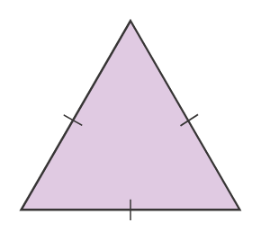
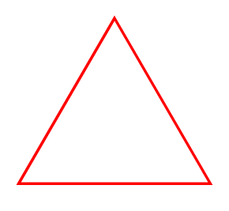
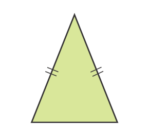
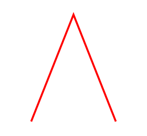
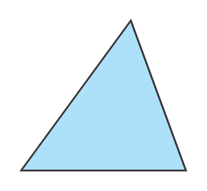

Actividad 2
Contenido
Observa los tipos de los triángulos depende de ángulo.
- 1Triángulo
rectángulo : tiene un ángulo recto. - 2Triángulo
acutángulo : tiene 3 ángulos agudos. - 3Triángulo
obtusángulo : tiene un ángulo obtuso.
Obervemos los diferentes tipos del triangulo segunlas longitudes de los lados
1


2


3

- 1Triangulo
equilatero :Es un triangulo que tiene las 3 longitudes de los lados iguales. - 2Triangulo
isoceles : Es un triangulo que tiene dos lados iguales. - 3Triangulo
escaleno : Es un triangulo que tiene sus 3 lados diferentes.
Un triangulo isosceles puede tambien ser un triangulo rectangulo